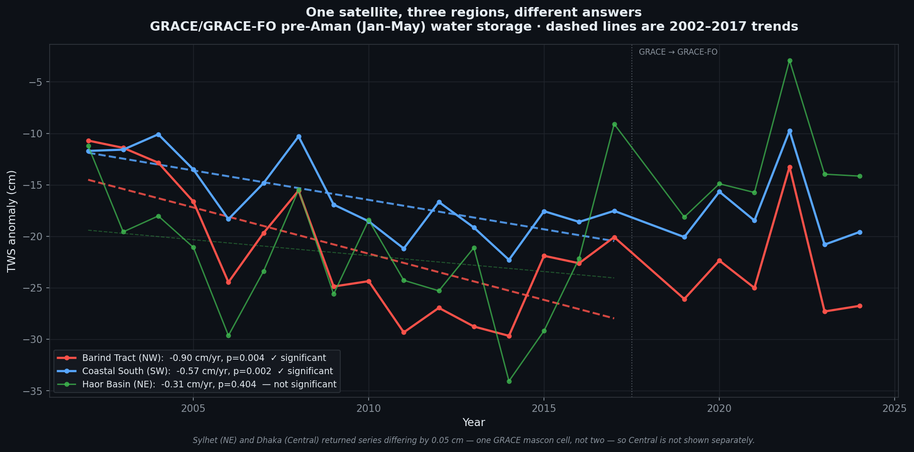

NASA GRACE satellites reveal silent groundwater collapse in the Barind Tract — translating space-based signals into actionable ward-level absorption stress indices for climate-induced migration planning in Dhaka.
NASA GRACE and GRACE-FO satellites (2002–2024) detect terrestrial water storage anomalies invisible to ground sensors. We thought it was drought. Then we looked underground. In the Barind Tract, surface water storage is minimal and monsoon soil moisture is seasonal — the residual persistent negative TWS anomaly is therefore consistent with groundwater depletion, supported by BWDB/BMDA tube-well records showing water-table decline averaging 0.2–0.4 m/year across Rajshahi district (2000–2013), and over 0.6 m/year in the fastest-depleting upazilas (Aziz et al. 2015).
A trend in one place means little without somewhere to compare it to. We ran the identical extraction — same product, same Jan–May window, same regression — over three regions of Bangladesh.

Water storage falling is a symptom. Two more NASA records over the same districts and the same season say what is causing it.
Anchored to Khalily et al. (2006/07) monga survey: 36% of poor NW Bangladesh households migrate under agricultural stress. This rate is used as a scenario parameter, not a prediction — it represents an observed behavioral response to agricultural income stress in NW Bangladesh, applied here to explore potential mobility pressure under sustained groundwater depletion. Select a scenario to update the city map.
The 75 Dhaka city-corporation wards with complete BBS 2022 records, scored on the Absorption Stress Index (WorldPop · GHSL · JRC flood risk · household size) crossed with incoming migration pressure: 46 low, 18 moderate, 11 high concern. GADM splits some wards across thana boundaries, so fragments of the same ward are dissolved back together before matching the census. A further 44 polygons still have no BBS match and are mapped but not ranked. Click any ward to explore its data.
Each layer carries its own epistemic status — validated, literature-informed, or scenario-based. Together they form a complete early warning pipeline: from satellite signal to actionable planning output.
PRAAN is designed for city planners, disaster risk managers, and urban policy teams — not as a prediction engine, but as a scenario-based early warning tool.
GRACE/GRACE-FO MASCON_CRI (2002–2024) · CHIRPS rainfall (1984–2022) · Pre-Aman season (Jan–May) TWS extraction · Mann-Kendall with Sen’s slope and a Hamed-Rao correction for serial correlation · Google Earth Engine
Exposed population: BBS Census 2022 · Migration rate: Khalily et al. 2006/07 monga survey · Destination: BBS Population Monograph Vol.06 · Three scenario bounds (20%–36%–50%)
Wards with complete BBS 2022 records are scored on four indicators: WorldPop 2020 population density (0.35), JRC GHSL 2020 built-up surface (0.25), JRC flood risk (0.20) and BBS 2022 mean household size (0.20). Wards without a BBS match use the three-indicator form (0.40 / 0.35 / 0.25) and are mapped but not ranked. Weights are expert-defined, not fitted. Crisis Index = normalised rank(ASI) × rank(arrivals) · OCHA COD-AB ward boundaries. Tier boundaries come from Jenks natural breaks on the Crisis Index itself, not from round numbers chosen by hand. How arrivals reach individual wards: the city-level estimate is distributed in proportion to population alone. It used to be distributed as population × (1 − ASI), sending more arrivals to less-stressed wards on the assumption that low stress meant spare capacity. We tested that assumption instead of defending it, and it does not survive.
The obvious test — correlate the ASI with observed 2000–2020 ward population growth — gives Spearman rho = +0.267 (p = 0.020) and appears to say that stress attracts arrivals. It does not, and we do not use it. The ASI’s largest component is present-day density, and a ward is dense today partly because it grew: the outcome sits inside the predictor. Rebuilt from year-2000 inputs only, so that nothing in the predictor can have been caused by the outcome, the index predicts nothing: rho = −0.154 (p = 0.19) over 2000–2020, −0.199 (p = 0.09) over 2000–2010, −0.119 (p = 0.31) over 2010–2020. No individual component reaches significance, and median growth across baseline-stress quartiles is flat (+105%, +115%, +106%, +106%).
So the ASI measures stress, not attraction, and we allocate on population alone — the only assumption the data supports. The ranking is robust to the choice: Kafrul Ward No-14 is the top ward under the old inverse rule, the stress-weighted rule and population-only alike, and ten of the top thirteen are shared between them. A sensitivity analysis across 625 weight combinations (±10pp per indicator, renormalised) shows the top-ranked ward is unchanged in 77.1% of combinations and the top five overlap by 4.0 of 5 on average. Membership at the boundary of the top 13 is weighting-dependent — the exact set reproduces in 11.2% of combinations, mean overlap 11.6 of 13 — and should be read as indicative rather than fixed.
Every layer carries a different epistemic status. These are the constraints a reviewer should hold us to.
All datasets are open-access. Full processing scripts available in project repository.
Product: MASCON_CRI (JPL RL06.3Mv04) · Collection: NASA/GRACE/MASS_GRIDS_V04/MASCON_CRI · Platform: Google Earth Engine · Period: 2002–2024 · Band: lwe_thickness (cm) · Watkins et al. (2015), Wiese et al. (2016)
Product: CHIRPS Pentad v2.0 · Collection: UCSB-CHG/CHIRPS/PENTAD · Platform: Google Earth Engine · Period: 1984–2022 · Resolution: 0.05° (~5.5 km) · Funk et al. (2015), Climate Hazards Group
Product: WorldPop Global Project, unconstrained · Resolution: 100 m · Platform: Google Earth Engine · Year: 2020 · WorldPop (www.worldpop.org), University of Southampton
Product: Global Human Settlement Layer, built-up surface · Collection: JRC/GHSL/P2023A/GHS_BUILT_S · Platform: Google Earth Engine · Epoch: 2020 · Resolution: 100 m · Pesaresi et al. (2023), European Commission JRC
Product: JRC Monthly Water History · Collection: JRC/GSW1_4/MonthlyHistory · Platform: Google Earth Engine · Period: 1984–2021 · Resolution: 30 m · Pekel et al. (2016), Nature
Bangladesh Bureau of Statistics · Population and Housing Census 2022, Urban Area Report · Ward-level: households, population, household size · Migration destination: BBS Population Monograph Vol.06 (2015), Table 3.8
GADM version 4.1, ward-level boundaries (ADM4) · gadm.org · OCHA COD-AB Bangladesh 2025, DNCC/DSCC city corporation boundaries · data.humdata.org
Khalily M.A.B., Khandker S.R., Samad H.A. (2006/07). Seasonal Migration and Coping Strategies: The Monga Context in Bangladesh. World Bank / BRAC. Used as scenario parameter (36% mobility rate) — observed behavioral response to agricultural income loss in NW Bangladesh.
Aziz M.A., Majumder M.A.K., Kabir M.S., Hossain M.I., Rahman N.M.F., Rahman F., Hosen S. (2015). Groundwater Depletion with Expansion of Irrigation in Barind Tract: A Case Study of Rajshahi District of Bangladesh. International Journal of Geology, Agriculture and Environmental Sciences, 3(1). BWDB/BMDA tube-well data, 2000–2013 — used to ground-truth the GRACE groundwater-depletion attribution.
Five students from the Department of Urban & Regional Planning, BUET. Each role below names the part of PRAAN that person owns and can be questioned on.
GRACE/GRACE-FO extraction and trend statistics · the Absorption Stress Index and ward-level ranking · the predictive validation that overturned the arrival-allocation rule · the reproducible Earth Engine and Python pipeline · this application.
Ground-truthing the eleven high-concern wards against local conditions · BWDB tube-well records behind the groundwater attribution · BBS, RAJUK and migration-literature sourcing · the reference base every published figure rests on.
The 240-second project film: script, narration and edit · translating a four-layer analytical pipeline into four minutes a non-specialist can follow · the story that carries the science.
The live presentation and demonstration · walking judges through the map and the three-satellite mechanism · fielding the hard questions, starting with what GRACE’s 300 km resolution can and cannot resolve over a country 400 km across.
Readability and mobile behaviour of this site · map legend and interface clarity · the Space Apps project submission, data-source declarations and event logistics · making sure the work is findable and usable by the people named above it.